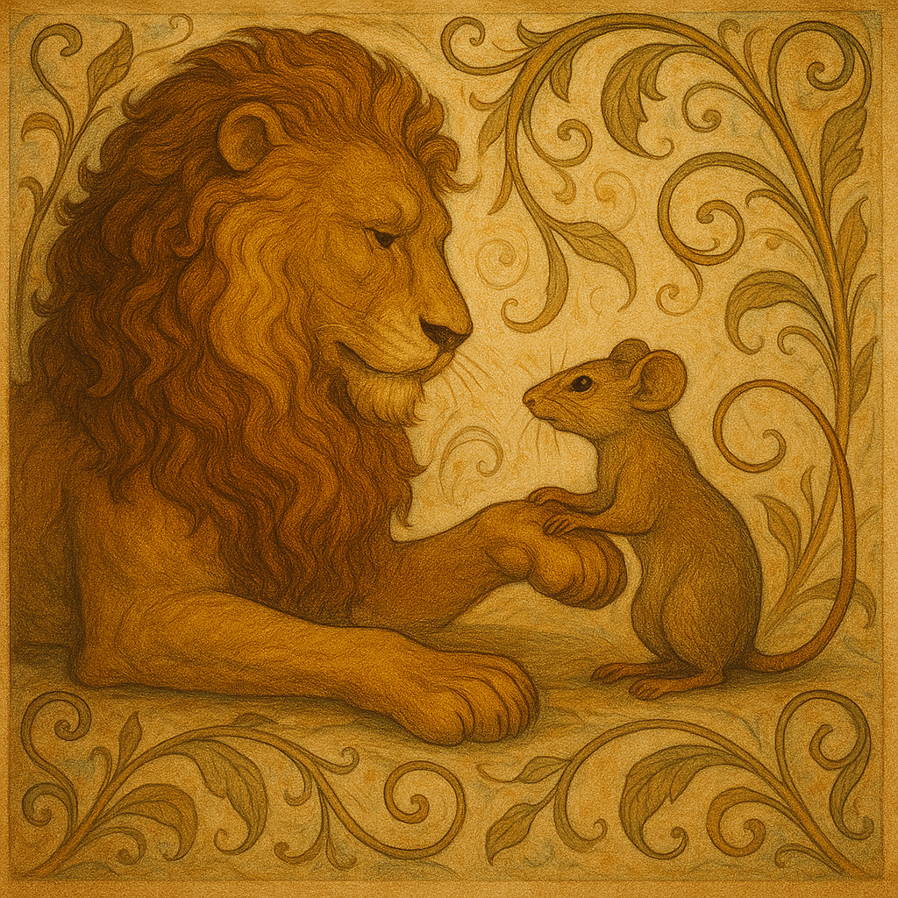

O Leão e o Rato
por Esopo
Um leão dormia tranquilamente quando um pequeno rato correu sobre seu corpo e o acordou. Com um rugido, o leão agarrou o rato com sua grande pata e se preparou para devorá-lo.
— Por favor, senhor Leão — implorou o rato —, perdoe-me! Se me poupar, prometo que um dia retribuirei sua bondade.
O leão riu da ideia, mas, intrigado pela coragem do ratinho, decidiu deixá-lo ir.
Alguns dias depois, o leão foi capturado por caçadores e preso em uma rede. Incapaz de se soltar, rugia de raiva. O rato ouviu os rugidos, correu até ele e com seus dentes afiados roeu as cordas, libertando o rei da selva.
— Lembra-se de mim? — disse o rato com um sorriso. — Eu prometi que ajudaria você.

Nenhum gesto de bondade é pequeno demais. Até os mais poderosos precisam, um dia, da delicadeza dos humildes.
Esta fábula nos fala de humildade e reciprocidade. Mostra que o poder verdadeiro não está apenas na força, mas também na capacidade de confiar no inesperado. Quem age com compaixão planta vínculos invisíveis que, no tempo certo, florescem em salvação. É o pequeno que nos ensina que nobreza está em reconhecer valor onde poucos enxergam.